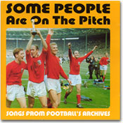
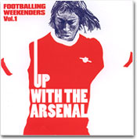

|

今回はこれしかないでしょう！ これしかテーマが浮かばないほど、もう頭の中はワールドカップ・モードでドンチャン騒ぎなのだ。代表誰に決まるんだぁ？ベッカム大丈夫かぁ？ てな具合で、聴く音楽はもっぱら〈フットボール・ソング〉。FIFA公認のオフィシャル・ソングやアルバムをはじめ、ここにきて新作から定番曲のコンピレーション・アルバムまで、サッカー関連の音楽がいろいろ発売されている。世界中でワールドカップがらみの新譜も続々と出ているはずだ。そんなのも聴いてみたいなと思いつつ……。
一番よく聴くのはイングランド物。サッカー（イギリスでは＜フットボール＞）発祥の地だけあって、このジャンルの音楽の多様さ豊かさには圧倒的なものがある。各クラブや代表チームの応援歌、選手個人へのトリビュート・アルバム、国内リーグやカップやワールドカップの優勝記念アルバム、選手みずから歌ったもの、中世以来の伝統的なバラッド（民話や伝説を簡単なメロディーに乗せて歌い語るもの）の手法でサッカーの歴史や事件を語ったもの、ラジオ・テレビのサッカーやスポーツ番組のテーマ曲……等々。民謡やクラシックの名曲のカヴァーあり、時代の先端を行くポップ・ミュージックありと、サッカーにまつわる音楽はどのジャンルにもリンクしている。 まさにUKロック誕生前夜の1950年代に、時を同じくして本格的に作られるようになった〈フットボール・ソング〉だが、ロニー・ドネガン、ロッド・ステュアート、オアシス、ブラーら大物ミュージシャンたちを巻き込みながらも、ロックの激流に翻弄されることなく、親しみやすさとノリの良さをモットーに（かどうかは知らないが）、堂々この国のポピュラー音楽の一角を担ってきたのである。
イギリスでは、出せば必ずチャートを賑わすフットボール・ソング。70年ワールドカップ・メキシコ大会のイングランド代表チーム（ボビー・ムーアやゴードン・バンクスたち）が歌った「バック・ホーム」や、90年イタリア大会のときのニュー・オーダーと代表チーム（リネカー、ガスコインたち）による「ワールド・イン・モーション」などは、全英1位になっている。ドラゴン・アッシュの「ファンタジスタ」はオリコン1位になっても、日本代表総出演で歌う曲やアルバムが1位になる日は来るだろうか。出せば行くかもしれないけれど、出すかなあ…？ 優勝とはいかなくても、ベスト8くらいいかないと、出してもカッコつかないだろうし。
Jリーグの各チームにもそれぞれ応援歌はあるはずだが、それが全国的にヒットしたことはまだない。71年、プレミア・リーグ、アーセナルのニ冠達成メンバーが歌って7週チャート入りしたという「グッド・オールド・アーセナル」――元歌は、イギリスで毎年開かれるクラシックの祭典プロムスのラスト・ナイトでも観客総立ちで大合唱になる定番曲の一つ、「ルール・ブリタニア！」（※昨年より演目から抹消されている）。ちなみにこの歌は、同じくラスト・ナイトの大合唱の定番「エルサレム」や国歌「ゴッド・セイヴ・ザ・クィーン」と共に、今やスタジアムでの代表の応援歌の定番。71年当時、この「グッド・オールド・アーセナル」のバックでギターを弾いていたのが、なんとレッド・ツェッペリンのジミー・ペイジ！それも、あの「天国への階段」と同じ頃！――というようなレベルの話題曲が出てくるのは、いつのことだろう。93年に誕生したばかりのJリーグだが、このワールドカップを機に、そろそろ代表とともに音楽分野でもアッと驚く大金星をとってくれないかなと、ひそかに期待している。
イングランドのフットボール・ソングは、いろいろある、たくさんあることが魅力だが、それ以上に最大の魅力は、スタジアムを揺るがすシング・アロング・ソングの力強い響きだ。歴史と誇りに彩られた数々のレパートリー、定番の歌が完全に定着しているからだろう、歌は自然発生的に沸き起こって、やがてそこにいる全員が自信を持ってありったけの声で唱和する。もともと合唱好きの国民性もあるだろうが、みんなで歌える歌のレパートリーが多いのは、ほんとうにうらやましい。
4月29日のキリンカップ、日本vsスロバキアのテスト・マッチは、ホームの国立競技場に6万のサポーターを集めた。超満員にもかかわらず、一部でわずかにお約束の「島唄」が聞こえた程度。試合中はともかく、前後とハーフタイムにも、スタジアム全体に響き渡るシング・アロング・ソングは聞こえなかった。ホームであれだけの人がいて、みんなで歌える歌がないのかと、ちょっぴりさみしく思えた。前回のときの「翼をください」はどうなったのか？ 結局、あのときだけで、「ユール・ネヴァー・ウォーク・アローン」のように定着しなかったのか？ その日、「島唄」はまだそれほど定着してるようには思えなかった。
日本代表サポーター、ウルトラスも、当初、今回のワールドカップについてはチケット確保の困難から従来どおりのまとまった応援は難しいと懸念していたようだが、開幕直前に新しいサポーター・ソング集をリリース、「1億2千万人サポーター化計画」をめざす。アルゼンチンでも大ブレイクしている「島唄」と「アイ・ウィル・サヴァイヴ」を、今回の日本のシング・アロング・ソングとして強力にプッシュ。みんなでスタジアムで歌おうと呼びかけている。わずかな期間でみんなが予習して、いっしょに歌えるようになればいいけど。チケット持ってる人みんな、がんばって覚えて歌い上げてほしい。選手の名前や「ニッポン！」のコールだけでなく、ホームのスタジアムを揺るがす大合唱をなんとしても聞いてみたいのだ。
スタジアム内外での世界各国のサポーターの「音」を聴くのも、ワールドカップの楽しみの一つだ。どのくらいのサポーターが来てくれるかだが、ブラジルのサンバ隊や韓国やカメルーンの太鼓なども、いつものことながら興味をそそる。サポーターたちは歌い、声を出し、音を出すことで、選手を応援する。ピッチの選手たちには、その「声」や「音」がどんなふうに聞こえているんだろう？
選手たちに聞きたいことが、まだある。各国の選手たちはふだん、どんな音楽を聴いているんだろう？ 移動中やロッカールームではどうなんだろう？ サッカーはリズム感が大事とか、ラテン系やアフリカ系の人はリズム感がいいとか、そんなことをよく耳にするが、サッカー選手が日常的に聴いて体に染み込んだ音楽がプレーに影響してくるものだろうか？ ビートの効いた音楽で血を踊らせたりリズム感を養い、静かな癒し系の音楽でリラックスしたりと、状況に応じて意識的に聴く音楽を使い分けるといいのだろうか？ そんなことおかまいなしに、とにかく自分が好きな音楽を聴いている方が、メンタルな面から良い結果を導くのだろうか？
またもイングランドの話だが、つい先日、代表チームの監督スヴェン・ゴラン・エリクソンが選んだクラシック音楽のコレクションが、3枚組豪華ボックスセットで発売された。「私の幸福に音楽は必要不可欠である」と、彼は言う。成績不振が続いたイングランド・サッカーの救世主と称えられる彼の「人生の一部」「人格の一面」だというクラシック音楽の数々。それを披露しようという企画が生まれること自体、サッカーと音楽がこの国で深く結びついていることの一つの証しではないか。スパイス・ガールズ大好きな（?!）ベッカムにも、監督はクラシック音楽の講釈をしたのかな……？
ワールドカップ開幕までもう何日もない。対戦のゆくえもさることながら、スタジアムに、街に、響き渡る歌や音楽、そのすべての音に、今からワクワクしている。

|